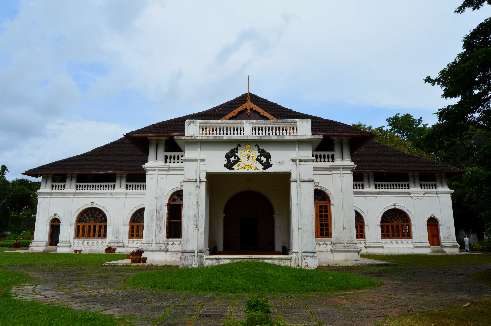
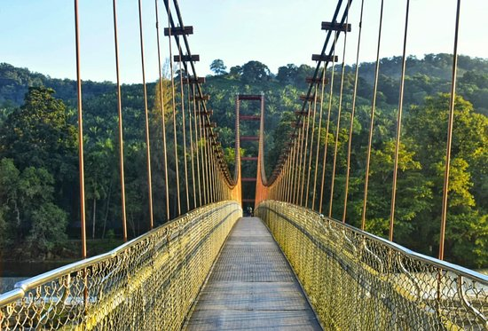

Thrissur
Think Thrissur and it is caparisoned elephants, colourful parasols and the beat of a thousand percussion instruments that come to mind. But the Thrissur Pooram is just one element that reflects the district's vibrant glory. The city has always played an active part, be it in trade relations during the ancient and medieval times, later during the period of colonial rule, to its prosperity under Sakthan Thampuran who was to change Thrissur's destiny forever under his effective leadership.
Top Spots
Vilankan Kunnu
Shakthan Thampuran Palace

Athirapilly Waterfalls
Thumboormuzhui


Reserve an entire day for Vilangan Kunnu so that you can make most of the experience. This beautiful hillock is called the 'Oxygen Jar' of Thrissur and rightly so. The amusement park, spread over five acres, was renovated by the District Tourism Promotion Council as a holiday treat for people, promising fun, and of course, a breath of fresh air, away from the bustle of the city. The big draw here is that there is something for everyone. The park is also differently-abled friendly. An 800m-long walkway allows those using wheelchairs to enjoy the scenic views themselves.
Children can choose from more than 13 amazing rides, including a Ferris wheel, a pedal boat pool ride and that amusement park must-have - dancing cars.
For a taste of royalty and politics of yore, Shakthan Thampuran Palace is the place to be. Located in the city centre, the palace is a confluence of the Kerala and Dutch styles of architecture, and was known as Vadakkechira Kovilakom. It is also known as Perumpadappu palace. It was renovated in 1795 by king Rama Varma Shakthan Thampuran (CE 1790-1805). The reign of Shakthan Thampuran is known as the golden era of Kochi. The king played a prime role in transforming Thrissur into the cultural capital of Kerala.
The Shakthan Thampuran Palace is a two-storeyed structure with a courtyard or naalukettu common to the traditional Kerala-style houses. Large rooms, high ceilings and Italian marble floors ensure that the interiors are pleasant even in the harshest of weather conditions.

Athirappilly Waterfalls is a mesmerising sight to the beholder. At 80 ft., it is the largest waterfall in Kerala and is also known as the Niagara of India.
Located in Thrissur's Chalakudy district, the Chalakudy river flows towards Athirappilly from where it cascades down the enormous height to form the breathtaking view. The river has its origins in the Anamudi mountains of the Western Ghats, where the Sholayar ranges begin. It flows with increased force as it approaches Athirappilly where it then divides into three falls.
s. At an elevation of 50ft, the Athirappilly-Vazhachal riparian forest hosts all the four South Indian species of hornbill including the state bird, the Great Hornbill. It is an 'Important Bird Area' according to the International Bird Association while The Wildlife Trust of India calls it India's best elephant conservation effort.
By far the most popular destination in Thrissur, Thumboormuzhi has many places of interest for tourists. The Thumboormuzhi Dam, a delightful Butterfly Park, a hanging bridge that offers a scenic view and a children's park make it a fun getaway.
The dam provides water to nearby villages for irrigation purposes. The hanging bridge presents a wider view of the dam and the forests surrounding it, apart from the river beneath the bridge which reveals its bed in the hotter months and the butterfly park on one side.
The area attracts many species of flora and fauna that thrive. Butterflies of several species in vibrant colours and sizes that will leave visitors gaping make the park an unforgettable experience. It is also home to many kinds of plants that lure the butterflies.